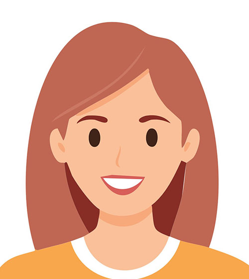
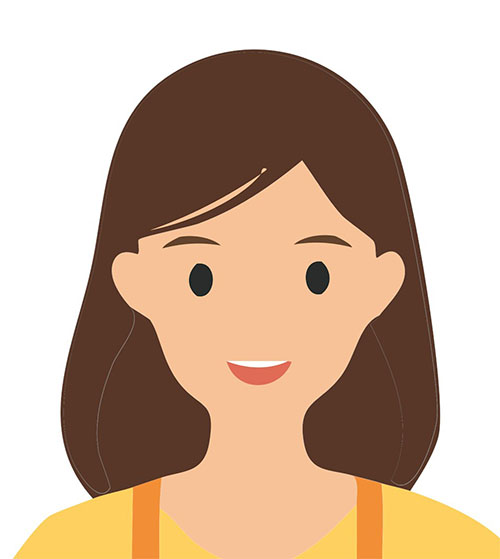

치료사 소개
뿌리와날개 언어심리발달센터는 아이의 발달과 정서를 폭넓게 이해하기 위해 각 영역의 전문성을 바탕으로 상담과 치료를 진행합니다. 치료사는 아이의 현재 어려움뿐 아니라 강점, 관계 방식, 가정 환경을 함께 살피며 필요한 지원을 안내합니다.
최형심 센터장

언어치료, 인지학습치료, 부모상담, 청소년상담을 담당합니다. 아이의 발달 수준에 맞춘 목표를 세우고 보호자가 일상에서 실천할 수 있는 구체적인 방향을 함께 안내합니다.
학력
- 경희대학교 아동학 전공 석사 졸업
- 경희대학교 아동학 전공 학부 졸업
경력
- 현) 뿌리와날개 언어심리발달센터
- 전) 도담도담심리발달센터
- 전) 서울탑마음클리닉 잠실점, 서초점
- 전) 강동정신건강의학과
- 전) 옥수종합사회복지관
자격 및 활동
- 청소년상담사 3급 / 여성가족부
- 언어재활사 2급 / 보건복지부
- 인지학습치료사 2급 / 대한학습치료사협회
- 중등정교사 2급 / 교육부
- 보육교사 1급, 보육시설장
- 한국언어재활사협회 정회원
김지윤 치료사

심리평가와 아동, 청소년, 성인 상담을 담당합니다. 정서와 행동의 어려움을 객관적으로 이해하고 아이와 보호자가 현재 상황을 안정적으로 바라볼 수 있도록 돕습니다.
학력
- 숙명여자대학교 대학원 아동복지학과 박사 수료 / 아동심리치료 전공
- 숙명여자대학교 대학원 아동복지학과 석사 졸업 / 아동심리치료 전공
- 숙명여자대학교 생명과학부 졸업 / 생명과학, 상담학 전공
경력
- 현) 뿌리와날개 언어심리발달센터
- 현) 강동정신건강의학과의원 심리평가
- 전) 디딤정신건강의학과의원 안양평촌점 심리평가
- 전) 우리가치아동발달전문기관 심리평가 및 아동 상담
- 전) 함께하는우리연구소 심리평가
- 전) 강동정신건강의학과의원, 라임아동청소년상담센터 아동·청소년 상담
- 전) 길음종합사회복지관, 성북구 청소년상담복지센터, 숙명여자대학교 놀이치료실
- 경기도의료원 의정부병원 정신건강의학과 임상심리전문가 과정 수료
- 경기도의료원 의정부병원 정신건강의학과 정신건강임상심리사 2급 과정 수료
자격 및 활동
- 정신건강임상심리사 2급 / 보건복지부
- 청소년상담사 2급 / 여성가족부
- 놀이심리상담사 2급 / 한국놀이치료학회
- 한국심리학회, 한국임상심리학회, 한국상담심리학회 정회원
- 한국발달심리학회, 한국놀이치료학회 정회원